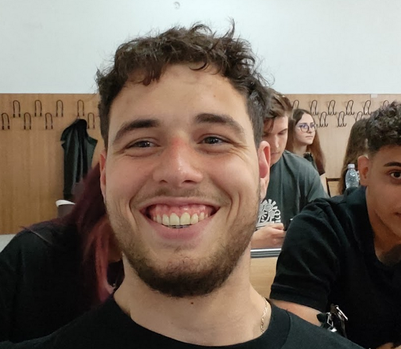

Echipa noastra
Luciu Sebastian este co-fondatorul platformei CaT și se ocupă de arhitectura aplicației și experiența utilizatorului. Pasionat de natură și tehnologie, a creat această platformă pentru a face campingul accesibil oricui. În timpul liber explorează trasee montane și testează personal locațiile listate.

Rusu Catalin este co-fondatorul platformei CaT și răspunde de dezvoltarea backend-ului și a sistemului de rezervări. Cu o experiență solidă în programare web, și-a propus să construiască o soluție fiabilă pentru iubitorii de camping din România. Este convins că fiecare aventură în aer liber începe cu alegerea locului potrivit.